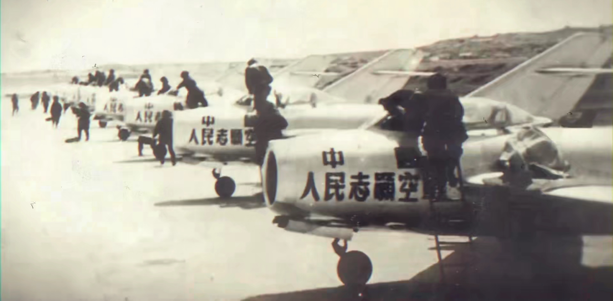
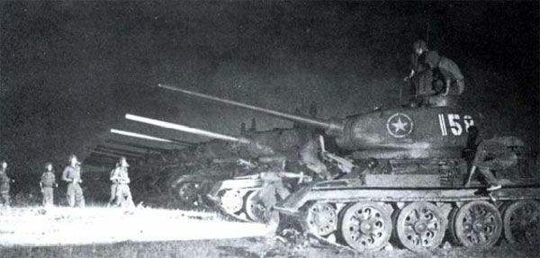
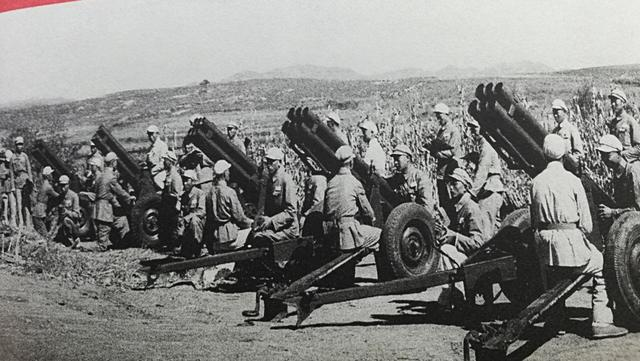
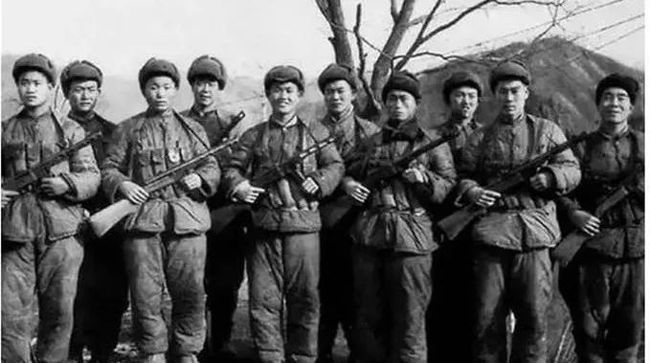

志愿军与联合国军兵力对比

空中对决

当是时美苏全球的争霸局势 令苏联不可能对美国在朝鲜的军事行动坐视不理 但台面上又不想与 美国 正面撕破脸皮 所以在中国以志愿军名义出兵地面部队的基础上 苏联决定秘密派遣精锐航空 兵予以支援 此次派遣的航空队 由二战苏联头号王牌 阔日杜布担任指挥 成员也多为二战老兵 经 验丰富 1951年4月12日 36架由苏联飞行员驾驶的米格-15战斗机拦截了一队由48架B-29轰炸机 组成的编队 这个编队由34架F-84护航 正准备轰炸鸭绿江上的大桥 在激烈的空战中有3架B29被 击落 7架以上被击伤 作为人类喷气战机的第一次大规模空中对决 性能相近的米格与佩刀可谓打的 难解难分 造就了一大批喷气时代的空战王牌 美苏方面 很多空战王牌 都曾经历过二战战火的历练 相比之下中国人民志愿军的新兵蛋子们直接在朝鲜战争的喷气对决中打出王牌战绩着实难能可贵如此 经历了朝鲜战火的王牌 成为了未来中国空军的栋梁
装甲对决

在第二次世界大战中 欧洲战场上曾上演过一幕幕装甲集群厮杀的大戏 美苏两大国在与德国的对抗中 都积累了丰富的装甲使用经验并搞出了自己的重装坦克朝鲜战争爆发后 这些本该卸甲的坦克重装上阵 在新的战场上与新的对手一决雌雄 二战中美军大量装备的M4谢尔曼坦克可谓战场中坚 不过期窄高的 车身设计 更适合支援步兵在朝鲜战场上 与美军装甲对抗的 是曾经盟友的苏制坦克T34-85 这款在二 战战火实践中改装的坦克在朝鲜战场丘陵起伏 山峦连绵的地形上发挥了重要作用 美国1954年的调查表明 朝鲜战争期间 有119起坦克间的战斗 志愿军由于缺乏制空权 故极少采用坦克集群作战 一般为分散至 补兵分队的小规模伴随支援作战 其中典型战例即为金城反击战期间215号车的作战经历是役 215号车 在车张杨阿如指挥下 在朝鲜西线石岘洞北山的战斗中击毁美军坦克5辆 被评为一等功臣 授予朝鲜二级 坦克英雄称号 总体来说 交战双方坦克的质量并没有代差 但装备数量上美军则有着压倒性的优势 好在 有险可守得地形 让装甲优势的发挥收到了极大地限制 在朝鲜战场上 坦克并没有像二战欧战中那样起到 决定性的作用
炮火覆盖

60年前大军汇聚的朝鲜战场 是一个复杂多山的地形 这样阵地战和攻坚战就不可避免的频繁发生 这时候 传统的战争之神火炮便有了大展拳脚的机会 志愿军部队装备的火炮大多是二战或内战中 俘获自 日军和国民党军队的 从最小的日制三八式75mm野战炮到最大的155mm美制M1A1榴弹炮 由于火炮参数和 弹道性能参差不齐 只能靠士兵们按照自己的经验瞄准开炮 从第五次战役开始 大量苏制榴弹炮开始被志愿 军装备 反观美军方面 火炮部队自成体系建制统一 不仅火炮数量远超志愿军 而且后勤补给充足的可怕 在炮火覆盖战术的使用方面 美国显然有着压倒性的优势 而志愿军则因地制宜 巧妙地利用坑道工事的土办 法加以对抗 著名的反斜面战术 便是利用山脊的掩护 在背敌面山坡上修筑工事 让整座山便成为了阻挡敌军 炮火的掩体 正常情况下 敌人的远程炮火会全数被山体阻挡 而如果敌人抵近高地 使用大角度曲射火力 打 击山脊背面 我方就必须通过坑道输送兵力予以反制了 同时 如果不能控制棱线制高点 就很容易让对方攻坚 补兵突破阵地 所以修筑四通八达的坑道 连接反斜面 正斜面以及山脊制高点就成了防御体系的必须 当敌人炮火覆盖时 躲到反斜面隐蔽 当敌人步兵进攻时 快速回到正斜面防御 在著名的上甘岭之役中 志愿军便是依靠反斜面战术死守高地 利用坑道工事的掩护 通常志愿军投入一个组3-4人的兵力 即可击退敌 人一个排的进攻 投入一个班 便可对付敌人一个连的冲锋 此外 志愿军自各部队抽调133门火炮组成战役支 援炮群 于五圣山反斜面发射阵地 对敌步兵及炮兵群实施跨山吊射 取得了不俗战果
单兵武装

纵使飞机大炮和装甲对决火花四溅 站上朝鲜战场的主角 还是血肉之躯的步兵 携二战后强大的军事余威 联合国士兵可谓从牙齿武装到脚踝 其步兵班组的自动火力和营连级支援火力相比于二战时期有增无减 针对朝 鲜山区的寒冷天气 美军步兵专门配发了包括从M1951野战外套到M1944防寒靴等一系列御寒装备 刚刚结束了 国内连绵战事的志愿军 带着大量从战场上取得的“万国牌”兵器冲进朝鲜 据不完全统计 首批入朝的志愿军 装备的枪炮弹药 包含了产自24个国家98家兵工厂的110多种型号 为整合部队战斗力 志愿军按武器的口径 型号统一调配 以师团为单位集中使用 如38军 基本使用三八大盖 九二重机枪等日制武器 40军则多使用 美制M1917和M1903步枪 随着战局深入 大量苏制武器的配备提升了志愿军的战斗力 整个战争期间 苏联共 向中国提供了64个陆军师装备 其中主要有莫辛纳甘M1944骑枪 pps41冲锋枪 pps43冲锋枪 DP27轻机枪 SG43重机枪 Dshk高射机枪等 在步兵连中 步枪和冲锋枪的装备数量 基本能达到各占一半 为了对付拥有 绝对活力优势的联合国军 志愿军广泛开展了冷枪冷炮运动 这是一种高密度 低烈度 小规模的偷袭和狙击战术 派遣小股部队游动于联合国军阵地周围 大量杀伤和消耗联合国军有生力量 平均每2发子弹毙伤一名敌人 每30发炮弹毁伤一辆坦克 极大地缓解了志愿军的装备劣势 堪称游击战术的高水平再演绎
总结
工欲善其事必先利其器 武器装备之于战争当然有着无可回避的积极意义 但最终决定战争胜负的依然是使用武器的人 同为在朝鲜异国作战 美军出阵一众二战中浴血而出的精锐 如大名鼎鼎的海军陆战队一师 中国人民志愿军 亦派出诸多经历抗日 解放战争的王牌部队 直接换装披挂上阵 精锐与王牌间的对决 显示出极高的技战术素养与坚韧顽强的战斗意志 在长津湖的皑皑白雪之中 在松骨峰的苍山巨石之上 在上甘岭的炮火硝烟之下 在金城川的断壁残垣之间 各型轻重兵器吐尽了自己的烈焰 万众恶劣的环境逞尽了自己的淫威 投身战场的钢铁兵刃 并非士兵们血肉之躯 的庇护所 一场从三八线打到三八线的搏杀 最终留下的是志愿军将士 埋骨他乡的万千忠魂 青山有幸埋忠骨无数志愿军先烈用自己的牺牲换来了现在朝鲜半岛局势的相对稳定 但过去六十年间 仍有无数血的教训 在告诫世间 告诫冲突阴云中的朝韩两国 战争一旦开始 便再也无法回头 如今 更大更快更强的武器 重新密布在朝鲜半岛左右 然当年大国博弈中毫无存在感的南北朝双方 今朝能否拥有决定自己命运的智勇觉悟 曾经的流血牺牲 不管是远道 而来的诸强 还是本土受难的民众 唯愿换来云开雾散的半岛和平